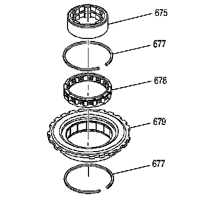
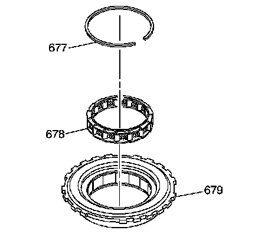

Low and Reverse Clutch Support Disassemble
Low and Reverse Clutch Support Disassemble

1. Remove the low and reverse roller clutch race (675) from the low and reverse clutch support (679). Inspect the race for damage and surface finish.
2. Remove the two low and reverse roller retainer rings (677) and the low and reverse roller clutch assembly (678). Inspect the roller clutch assembly for damaged rollers and broken springs.
3. Inspect the low and reverse clutch support (679) for loose cam and cam surface finish. Check the support for cracks and damaged lugs.

4. Clean and install the low and reverse roller clutch assembly (678) into the low and reverse clutch support (679). Install the low and reverse retainer ring (677).